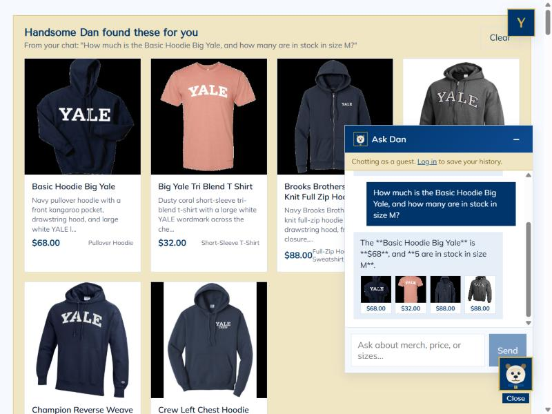
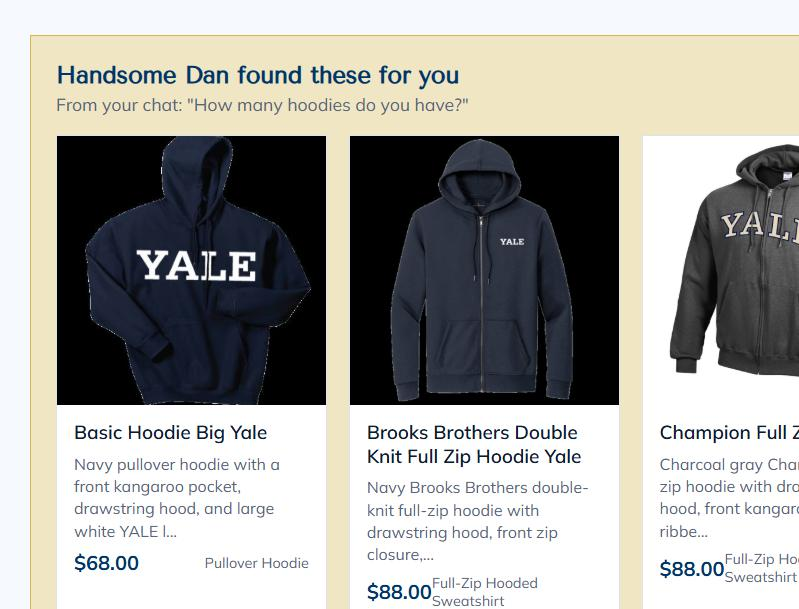
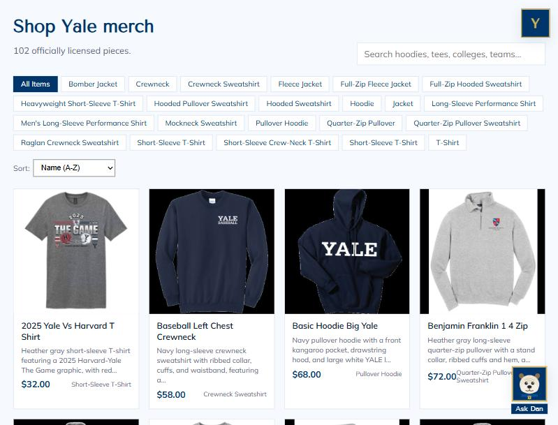

1. Chat checks real inventory & price from the database

In the "Ask Dan" chat, the shopper asks the price and size-M stock of the
Basic Hoodie Big Yale. The agent replies
"$68, and 5 are in stock in size M" - these numbers come
straight from the catalogue and inventory tables
via the agent's tools, proving the answers are honest and not invented.
2. Category question renders dynamic product cards

After asking "How many hoodies do you have?", the agent's structured matches appear on the page under "Handsome Dan found these for you" as product cards with image, name, price and short info (27 hoodies surfaced). This proves the agent returns structured results and the front end renders them live; each card also links to its single-item page.
3. Usability feature (Problem 9): filter chips & sort

The Products page offers garment-type filter chips (All Items, Hoodie, Crewneck, Quarter-Zip Pullover, T-Shirt, ...) and a Sort control (Name, Price low-to-high, Price high-to-low). This proves the Problem 9 usability improvement is live, letting a shopper narrow 102 products and reorder them in a couple of clicks.